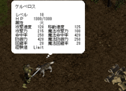

- 仲間 -
仲間はプレイヤーと常に行動を共にします。
自主的に戦ってもらうことも出来ますし、
プレイヤーが命令を与えることもできます。
・仲間の操作・
| 攻撃モードの切り替え | 仲間が攻撃しているときに、キーボードのスペースキーを押すと、 非攻撃モード (INACTIVE) になり、プレイヤーのもとに帰ってきます。 また、非攻撃モードのときにキーボードのスペースキーを押すと、 攻撃モード (ACTIVE) になり、自主的に戦います。 version 1.004.000 以降では非攻撃モードの際に仲間のHPが少しずつ回復します。 |
| 突撃 | 仲間がプレイヤーの近くにいる状態で、キーボードのTABキーを押しながら 右クリックすると突撃します。 突撃した先に敵がいた場合は敵にダメージを与えます。 (第二話以降でのみ可能です) |
| ジャンプ | 敵にマウスカーソルを合わせた状態で、キーボードのTABキーを押しながら 左クリックすると敵を蹴散らします。 |
| アイテム拾得 | アイテムにカーソルを合わせた状態で、キーボードのTABキーを押しながら 左クリックすると仲間がアイテムを取りに行ってくれます。 |
| スイッチ切り替え | 遺跡等にあるスイッチにマウスカーソルを合わせた状態で、TABキーを押しながら 左クリックすると仲間がスイッチを押してくれます。 |
・仲間の成長・
仲間はプレイヤーと自分自身（仲間）が
倒したモンスターの数によってレベルアップします。
プレイヤーのレベルが十分に高くないと、
仲間のレベルは上がりません。
・仲間の交代・
町などで他の仲間と交代することができます。
交代しても仲間のレベルはそのまま残っているので、
再度、前の仲間に交代したときは前の状態から開始できます。
オンラインモード時は仲間の交代ができません。
・仲間のステータス・
|  |
| 仲間にもステータスがあり、仲間によって特徴が異なります。 仲間のステータスを見るには仲間の近くで、 キーボードのTABキーを押しながら仲間を左クリックしてください。 ただし、仲間が動いていないときに限ります。 |